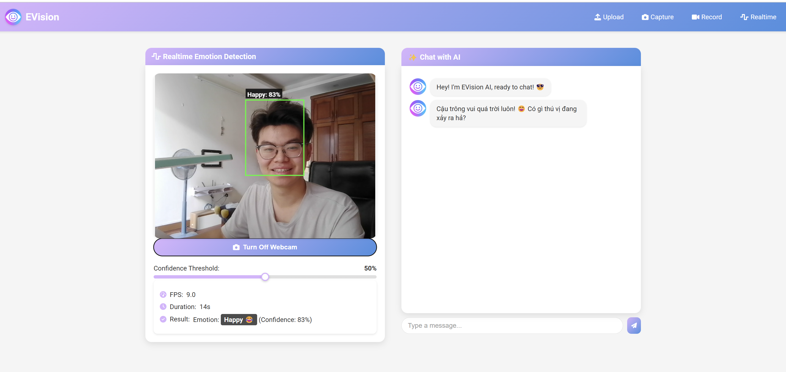
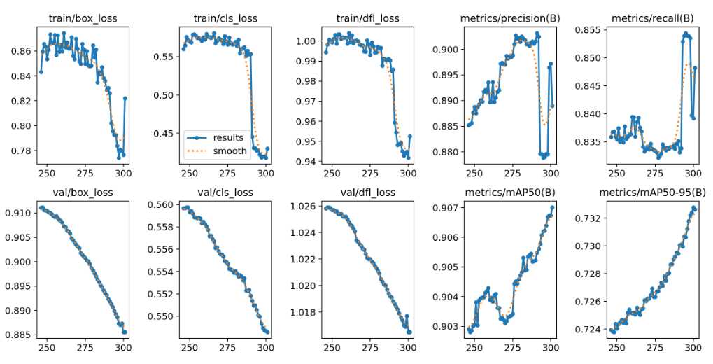
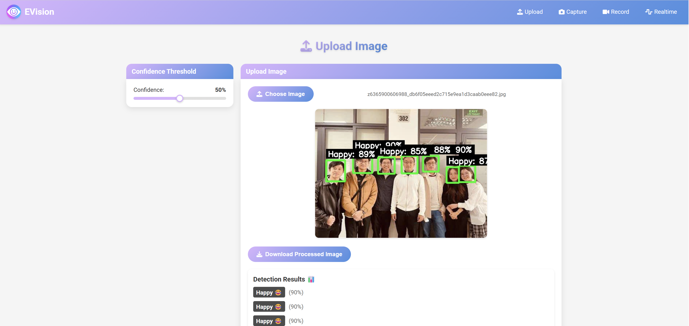
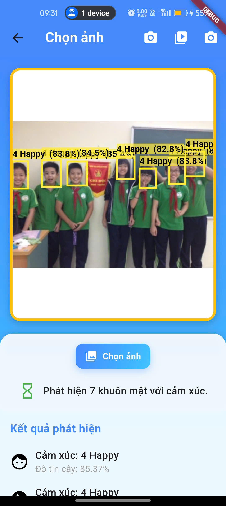
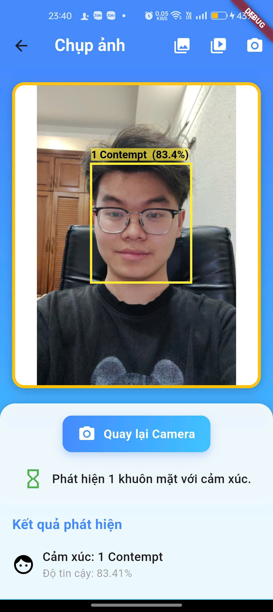

AI research case study · 2025
Machines that read the human signal.
EVision detects facial emotions across web and Android—combining YOLOv12, real-time interaction and private on-device inference.
Emotion-aware interaction

01 / Live perceptionHappy · 83% confidence
ProjectEVision
Core modelYOLOv12s
PlatformsWeb + Android
Research codeCN.NC.SV.24.20
01 The challenge
Emotion recognition that moves beyond a single screen.
Facial expressions are a rich non-verbal signal, but real-world recognition must handle changing light, pose, image noise, multiple faces and visually similar emotional states.
EVision treats the model as one layer in a complete experience: image, video and live-camera analysis on the web, plus private TensorFlow Lite inference on Android.
02 Model & data
Eight expressions. One real-time detector.
Faces were manually boxed and labeled, normalized to 640 × 640, then augmented for rotation, brightness, exposure, blur and noise.
AngerContemptDisgustFear
HappyNeutralSadSurprised
01Collect8,821 facial images
→
02AnnotateFaces · boxes · labels
→
03TrainYOLOv12s · 120 epochs
→
04ServeFlask · Socket.IO
→
05OptimizeONNX · TensorFlow Lite
03 Model comparison
Same research dataset · small model variants
YOLOv12 leads under stricter evaluation.
Across five YOLO generations, YOLOv12s delivered the strongest mAP50 and mAP50–95 while keeping the model compact at 9.26 million parameters.
ModelParamsmAP50mAP50–95
YOLOv12s9.26M94.1%85.1%
YOLOv11s9.46M93.5%83.3%
YOLOv10s8.04M93.5%81.3%
YOLOv9s7.29M93.6%80.7%
YOLOv8s11.14M90.9%74.1%

04 Cross-platform experience
One model · two deployment paths
Browser experience / Web
Four ways to understand a moment.
The Flask interface supports image upload, webcam capture, video recording and continuous recognition over WebSocket—with a confidence control for tuning results.
- Image and multi-face detection
- Live webcam inference with Socket.IO
- Downloadable annotated results

Emotion-aware AI / Gemini
A conversation tuned to how you feel.
EVision aggregates detected emotion during the opening seconds, then gives Gemini 1.5 Pro the context to adapt its tone. The chatbot responds in Vietnamese or English through the same real-time channel.
- Context from the dominant detected emotion
- Vietnamese and English responses
- Live chat synchronized by WebSocket


Private inference / Android
Recognition stays on the device.
The PyTorch model travels through ONNX and TensorFlow SavedModel to a float32 TensorFlow Lite build. Flutter runs inference locally with four CPU threads, while isolates keep the interface responsive.
- Gallery, camera and video analysis
- 640 × 640 local preprocessing
- On-device NMS and result rendering
05 Evaluation
Strong results—with the hard cases made visible.
Evaluation covered 917 images and 2,820 face instances. Contempt and Sad were among the strongest classes; Happy and Neutral remained harder to localize precisely because expressions vary and overlap.
Reported results use the paper’s Table 4.1 and Table 4.2. Training ran for 120 epochs at 640 × 640 with batch size 32 on Tesla T4 and P100 environments.
Precision93.7%
Recall89.8%
mAP5094.1%
mAP50–9585.1%
06 Next direction
From expression labels to more natural interaction.
Future work targets difficult expressions, lighting and occlusion robustness, iOS support, an Android chatbot and voice-based interaction. Emotion inference should support—not replace—human judgment in sensitive contexts.